TeamPress
Team showcase wordpress plugin
- Latest update: 26 November 2018
- By: ExThemes
- Email: sp.exthemes.net@gmail.com
Thank you for purchasing my plugin. If you have any questions that are beyond the scope of this help file, please feel free to email via my user page contact form here. Thanks so much!
Introduction
TeamPress is a Wordpress plugin that helps you create information about your team members/staff include name, image, description, links to social account and show it easily on your site. By this teampress plugin you can display all information with any styles, layouts and anywhere via shortcodes.
Features list
- 60+ Styles support
- Fully responsive and mobile ready.
- Unlimited TeamPress anywhere.
- TeamPress with many columns(2, 3, 4, 5)
- TeamPress with Grid, List, Table, Carousel(Slider view)
- Ajax load more members, search, alphabetical filter, pagination
- Support show full content with Lightbox, Modal and Colllapse
- Unlimited TeamPress Color. You can set color for all or each style
- Support category - allows you can create unlimited team group
- Vertical and horizontal support
- Flat style include
- Unlimited customize with font, color
- Visual Composer support
- Supper easy configuration
- And more …
Installation
The Full Package includes these following files and folders:
- Documentation folder - Contain this document
- Installation Files folder - Contain installable file plugin
- teampress.zip folder - WordPress Plugin Installation file
Install via Wordpress admin
- Login to WordPress Admin
- In the left menu panel go to Plugins > Add New > Upload to install plugin
- Click Upload
- Browse your download package to select installation files
- Click Install Now button
- Once it's uploaded, click the Activate link
Install via FTP Account
- Use your FTP software to browse to wp-content/plugins folder to install plugin
- Extract the installation files to their corresponding folders, for example teampress.zip to teampress and upload to server
- Once it's uploaded, go to your WordPress Admin, browse to Plugins > Installed Plugins
- Click the Activate link
Update
- Deactive "TeamPress" plugin by going to Plugins > Deactive "TeamPress" plugin
- Delete older version by clicking on Delete link. Confirm to delete.
- Update and re-install new version.
Install Sample Data
Creating TeamPress
1. Go To Wordpress Admin > Team > Add New Member
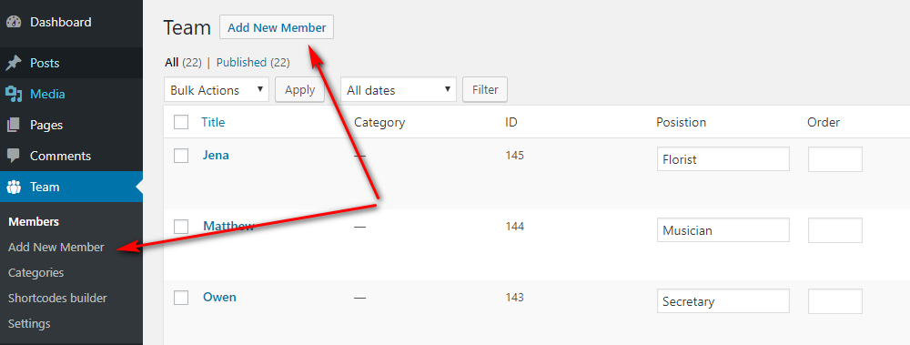2. Set a title, description, featured image and required field of the teampress
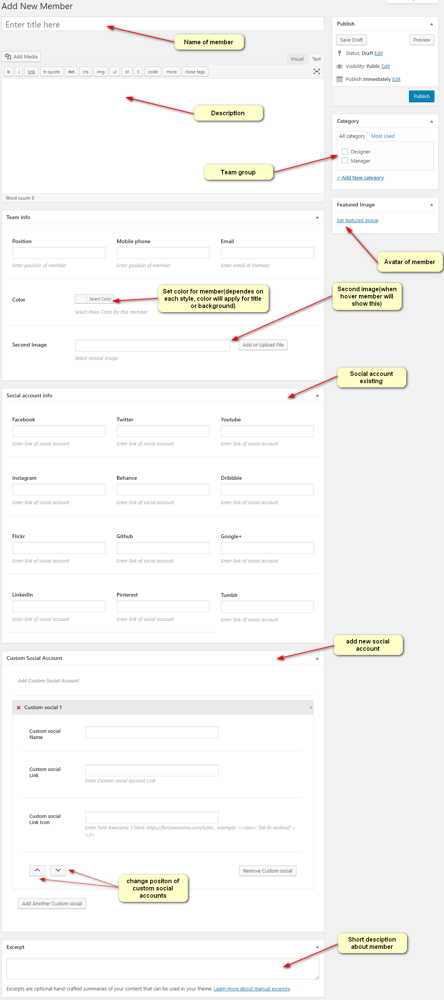3. Display
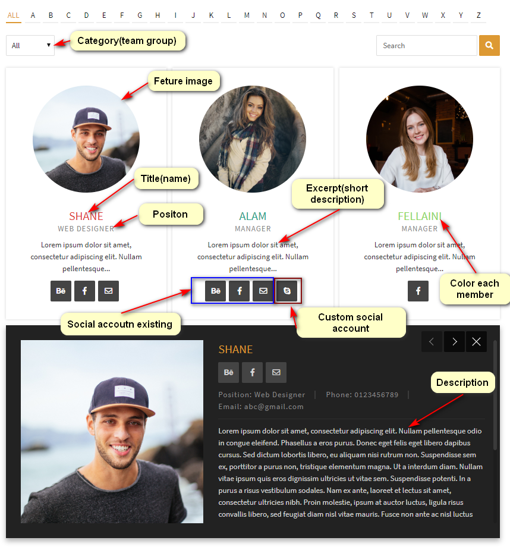Display when hover
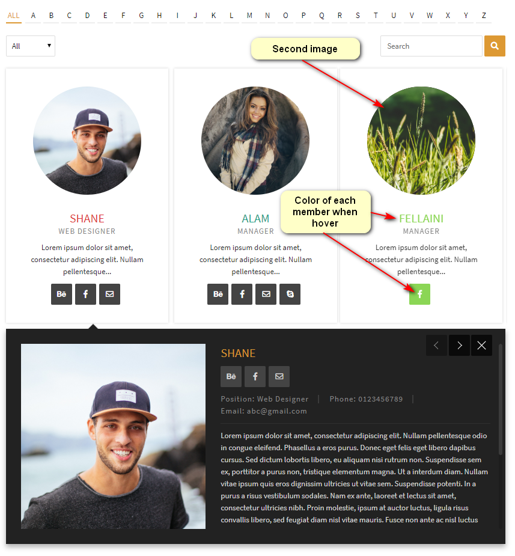Edit member information detail
1. Go To Wordpress Admin > Team > Member
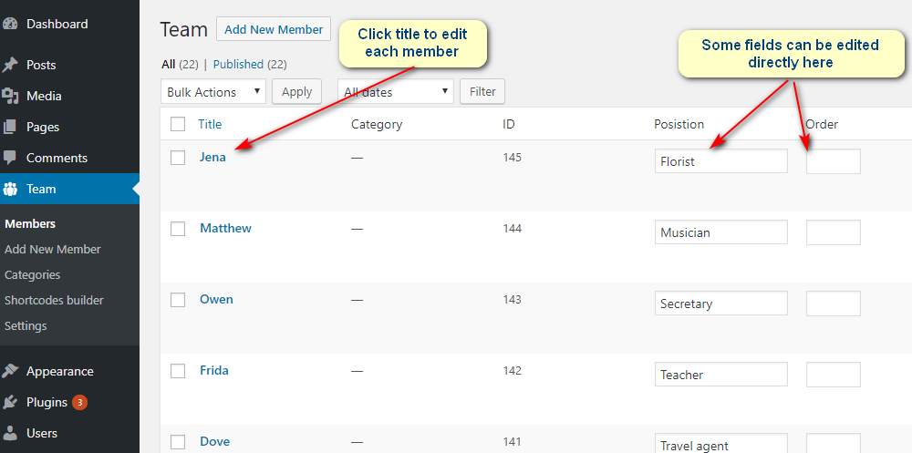2. Click title to edit each member, after edit press update button to finish
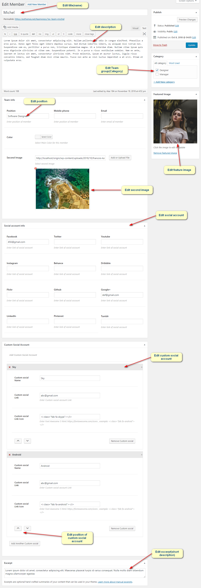Creating, Editing Category
Create category
Go To Wordpress Admin > Team > Categories > Input name, slug, description and press Add new category button
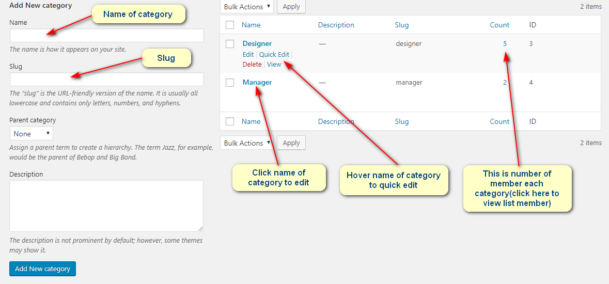Edit category
1. Click name of category to edit category detail
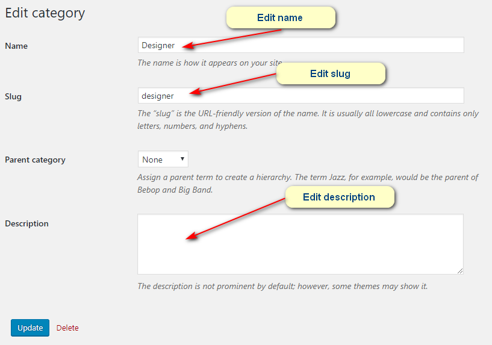2. Hover name of category to quick edit category detail
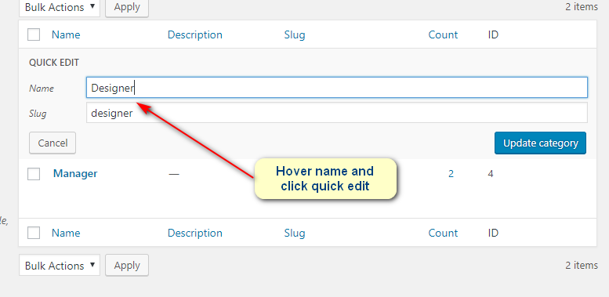3. Click count of each category to view list member in this category
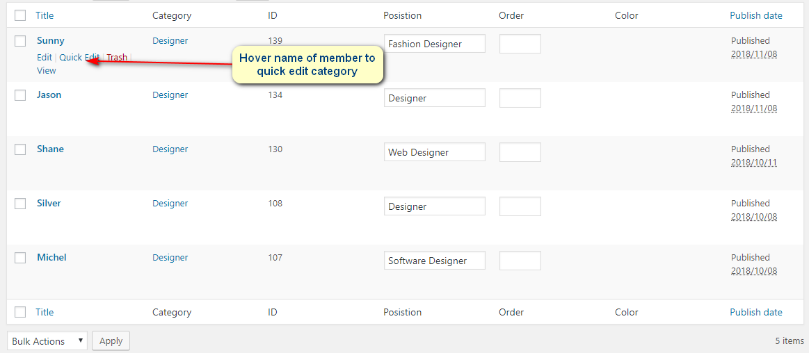4. Hover name of member to quick edit category
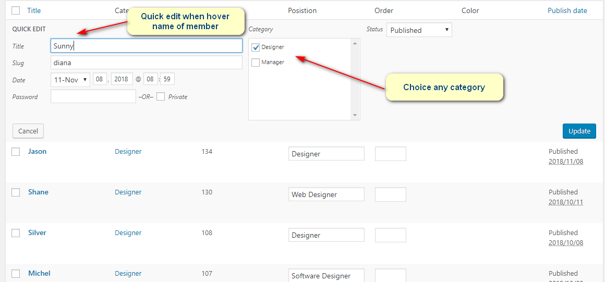Shortcode
You could use Shortcode builder feature to generate shortcode instead using default shortcode
TeamPress shortcode also has supported: Visual Composer, Elementor and SiteOrigin page builder so you could use those page builder to config shortcode
TeamPress Grid
TeamPress Grid is a shortcode for displaying teampress on grid.
- style - Select number style(Default 1)
- Team grid - stye start 1 to 20 (example style="1")
- Team Image hover grid -stye start img-1 to img-10 (example style="img-1")
- column - A number of items to show per line. Default 2
- count - A number items will be showed. Default total items(Example: your team have 23 members but you only want to display 20 members, you can set count="20")
- posts_per_page - relates param page_navi
- page_navi="loadmore", posts_per_page is number of items to add in the end after event load more (Example page_navi="loadmore" posts_per_page="3" - show 3 items in the end after click button load more)
- page_navi="" (Pagination), posts_per_page is number of items to show per page(Example page_navi="" posts_per_page="3" - show 3 items in per page).
- ids - List of IDs to query, separated by a comma(example ids="1,2,3")
- cat - List of category ids (or slug), separated by a comma(example cat="designer" or cat="1")
- fullcontent_in - type of display full content(Default fullcontent_in="", no display full content)
- fullcontent_in="lightbox", full content display in lightbox(pop up in center screen)
- fullcontent_in="collapse", full content display in collapse after items
- fullcontent_in="modal", full content display in pop up in the right screen
- search_box - Show or hide search and category filter(Default hidden)
- search_box="hide"
- search_box="show"
- alphab_filter - Show or hide alphabetical filter(Default hidden)
- alphab_filter="" - hide
- alphab_filter="yes" - show
- page_navi - type of display(load more event or pagination) refer with param posts_per_page
- page_navi="loadmore", add items in the end after event load more
- page_navi="" ,Pagination
- number_excerpt - Enter number of excerpt to show(Default 10), example number_excerpt="20"
- order - Order ascending (order="ASC") or descending (order="DESC")
- orderby - Choose order condition
- 'date' - Order by date.
- 'ID' - Order by post id. Note the captialization.
- 'author' - Order by author.
- 'title' - Order by title.
- 'name' - Order by post name (post slug).
- 'modified' - Order by last modified date.
- 'parent' - Order by post/page parent id.
- 'rand' - Random order.
- 'menu_order' - Order by Page Order. Used most often for Pages (Order field in the Edit Page Attributes box) and for Attachments (the integer fields in the Insert / Upload Media Gallery dialog), but could be used for any post type with distinct 'menu_order' values (they all default to 0).
- 'meta_value' - Note that a 'meta_key=keyname' must also be present in the query. Note also that the sorting will be alphabetical which is fine for strings (i.e. words), but can be unexpected for numbers (e.g. 1, 3, 34, 4, 56, 6, etc, rather than 1, 3, 4, 6, 34, 56 as you might naturally expect). Use 'meta_value_num' instead for numeric values.
- 'meta_value_num' - Order by numeric meta value (available with Version 2.8). Also note that a 'meta_key=keyname' must also be present in the query. This value allows for numerical sorting as noted above in 'meta_value'.
- 'post__in' - Preserve post ID order given in the ids array
- 'none' - No order
- meta_key - Enter custom field key, Show posts associated with a certain custom field
- masonry - Apply mansory layout or not
- masonry="yes", apply
- masonry="" ,not apply
Example: Style 1 (3 columns) with Collapse, Alphabetical filter, Pagination and Search box(click here to view detail demo)
Team list
Team list is a shortcode for displaying teampres on listing .
- style - Select number style start 1 to 3(example style="1")
- count - A number items will be showed. Default total items(Example: your team have 23 members but you only want to display 20 members, you can set count="20")
- posts_per_page - relates param page_navi
- page_navi="loadmore", posts_per_page is number of items to add in the end after event load more (Example page_navi="loadmore" posts_per_page="3" - show 3 items in the end after click button load more)
- page_navi="" (Pagination), posts_per_page is number of items to show per page(Example page_navi="" posts_per_page="3" - show 3 items in per page).
- ids - List of IDs to query, separated by a comma(example ids="1,2,3")
- cat - List of category ids (or slug), separated by a comma(example cat="designer" or cat="1")
- fullcontent_in - type of display full content(Default fullcontent_in="", no display full content)
- fullcontent_in="lightbox", full content display in lightbox(pop up in center screen)
- fullcontent_in="modal", full content display in pop up in the right screen
- search_box - Show or hide search and category filter(Default hidden)
- search_box="hide"
- search_box="show"
- alphab_filter - Show or hide alphabetical filter(Default hidden)
- alphab_filter="" - hide
- alphab_filter="yes" - show
- page_navi - type of display(load more event or pagination) refer with param posts_per_page
- page_navi="loadmore", add items in the end after event load more
- page_navi="" ,Pagination
- number_excerpt - Enter number of excerpt to show(Default 10), example number_excerpt="20"
- order - Order ascending (order="ASC") or descending (order="DESC")
- orderby - Choose order condition
- 'date' - Order by date.
- 'ID' - Order by post id. Note the captialization.
- 'author' - Order by author.
- 'title' - Order by title.
- 'name' - Order by post name (post slug).
- 'modified' - Order by last modified date.
- 'parent' - Order by post/page parent id.
- 'rand' - Random order.
- 'menu_order' - Order by Page Order. Used most often for Pages (Order field in the Edit Page Attributes box) and for Attachments (the integer fields in the Insert / Upload Media Gallery dialog), but could be used for any post type with distinct 'menu_order' values (they all default to 0).
- 'meta_value' - Note that a 'meta_key=keyname' must also be present in the query. Note also that the sorting will be alphabetical which is fine for strings (i.e. words), but can be unexpected for numbers (e.g. 1, 3, 34, 4, 56, 6, etc, rather than 1, 3, 4, 6, 34, 56 as you might naturally expect). Use 'meta_value_num' instead for numeric values.
- 'meta_value_num' - Order by numeric meta value (available with Version 2.8). Also note that a 'meta_key=keyname' must also be present in the query. This value allows for numerical sorting as noted above in 'meta_value'.
- 'post__in' - Preserve post ID order given in the ids array
- 'none' - No order
- meta_key - Enter custom field key, Show posts associated with a certain custom field
Example: List style 3 with Pagination, Lightbox, Alphabetical Filter and Search(click here to view detail demo)
Team Table
Team table is a shortcode for displaying teampres on table .
- style - Select number style start 1 to 2(example style="1")
- count - A number items will be showed. Default total items(Example: your team have 23 members but you only want to display 20 members, you can set count="20")
- posts_per_page - relates param page_navi
- page_navi="loadmore", posts_per_page is number of items to add in the end after event load more (Example page_navi="loadmore" posts_per_page="3" - show 3 items in the end after click button load more)
- page_navi="" (Pagination), posts_per_page is number of items to show per page(Example page_navi="" posts_per_page="3" - show 3 items in per page).
- ids - List of IDs to query, separated by a comma(example ids="1,2,3")
- cat - List of category ids (or slug), separated by a comma(example cat="designer" or cat="1")
- fullcontent_in - type of display full content(Default fullcontent_in="", no display full content)
- fullcontent_in="lightbox", full content display in lightbox(pop up in center screen)
- fullcontent_in="modal", full content display in pop up in the right screen
- search_box - Show or hide search and category filter(Default hidden)
- search_box="hide"
- search_box="show"
- alphab_filter - Show or hide alphabetical filter(Default hidden)
- alphab_filter="" - hide
- alphab_filter="yes" - show
- page_navi - type of display(load more event or pagination) refer with param posts_per_page
- page_navi="loadmore", add items in the end after event load more
- page_navi="" ,Pagination
- number_excerpt - Enter number of excerpt to show(Default 10), example number_excerpt="20"
- order - Order ascending (order="ASC") or descending (order="DESC")
- orderby - Choose order condition
- 'date' - Order by date.
- 'ID' - Order by post id. Note the captialization.
- 'author' - Order by author.
- 'title' - Order by title.
- 'name' - Order by post name (post slug).
- 'modified' - Order by last modified date.
- 'parent' - Order by post/page parent id.
- 'rand' - Random order.
- 'menu_order' - Order by Page Order. Used most often for Pages (Order field in the Edit Page Attributes box) and for Attachments (the integer fields in the Insert / Upload Media Gallery dialog), but could be used for any post type with distinct 'menu_order' values (they all default to 0).
- 'meta_value' - Note that a 'meta_key=keyname' must also be present in the query. Note also that the sorting will be alphabetical which is fine for strings (i.e. words), but can be unexpected for numbers (e.g. 1, 3, 34, 4, 56, 6, etc, rather than 1, 3, 4, 6, 34, 56 as you might naturally expect). Use 'meta_value_num' instead for numeric values.
- 'meta_value_num' - Order by numeric meta value (available with Version 2.8). Also note that a 'meta_key=keyname' must also be present in the query. This value allows for numerical sorting as noted above in 'meta_value'.
- 'post__in' - Preserve post ID order given in the ids array
- 'none' - No order
- meta_key - Enter custom field key, Show posts associated with a certain custom field
- live_sort - Show or hide sort
- live_sort="" - hide
- live_sort="1" - show
Example: Table style 1 with Load more and Modal(click here to view detail demo)
Team Carousel
Team Carousel is a shortcode for displaying teampres on slider .
- style - Select number style start 1 to 2 and img-1 to img-10(example style="1")
- count - A number items will be showed. Default total items(Example: your team have 23 members but you only want to display 20 members, you can set count="20")
- slidesshow - number items per slide (Default:3)
- ids - List of IDs to query, separated by a comma(example ids="1,2,3")
- cat - List of category ids (or slug), separated by a comma(example cat="designer" or cat="1")
- fullcontent_in - type of display full content(Default fullcontent_in="", no display full content)
- fullcontent_in="lightbox", full content display in lightbox(pop up in center screen)
- fullcontent_in="modal", full content display in pop up in the right screen
- number_excerpt - Enter number of excerpt to show(Default 10), example number_excerpt="20"
- order - Order ascending (order="ASC") or descending (order="DESC")
- orderby - Choose order condition
- 'date' - Order by date.
- 'ID' - Order by post id. Note the captialization.
- 'author' - Order by author.
- 'title' - Order by title.
- 'name' - Order by post name (post slug).
- 'modified' - Order by last modified date.
- 'parent' - Order by post/page parent id.
- 'rand' - Random order.
- 'menu_order' - Order by Page Order. Used most often for Pages (Order field in the Edit Page Attributes box) and for Attachments (the integer fields in the Insert / Upload Media Gallery dialog), but could be used for any post type with distinct 'menu_order' values (they all default to 0).
- 'meta_value' - Note that a 'meta_key=keyname' must also be present in the query. Note also that the sorting will be alphabetical which is fine for strings (i.e. words), but can be unexpected for numbers (e.g. 1, 3, 34, 4, 56, 6, etc, rather than 1, 3, 4, 6, 34, 56 as you might naturally expect). Use 'meta_value_num' instead for numeric values.
- 'meta_value_num' - Order by numeric meta value (available with Version 2.8). Also note that a 'meta_key=keyname' must also be present in the query. This value allows for numerical sorting as noted above in 'meta_value'.
- 'post__in' - Preserve post ID order given in the ids array
- 'none' - No order
- meta_key - Enter custom field key, Show posts associated with a certain custom field
- autoplay - Auto next slide or not
- autoplay="" - not auto
- autoplay="1" - auto
- autoplayspeed - Autoplay Speed in milliseconds. Default:3000, it work only autoplay="1"(example autoplay="1" autoplayspeed="1000")
- loading_effect - Enable or disable effect when loading
- loading_effect="" - no effect
- loading_effect="1" - apply effect
- infinite - Infinite loop sliding ( go to first item when end loop)
- infinite="" - not infinite
- infinite="yes" - infinite
Example: Corousel style 10 with 4 items visible, Auto play(defalt 3 seconds), Modal and Infinite( go to first item when end loop) click here to view detail demo
TeamPress Mansory
TeamPress Mansory is a shortcode for displaying teampress apply mansory layout.
- style - Select number style(Default 1)
- Team grid - stye start 1 to 20 (example style="1")
- Team Image hover grid -stye start img-1 to img-10 (example style="img-1")
- column - A number of items to show per line. Default 2
- count - A number items will be showed. Default total items(Example: your team have 23 members but you only want to display 20 members, you can set count="20")
- posts_per_page - relates param page_navi
- page_navi="loadmore", posts_per_page is number of items to add in the end after event load more (Example page_navi="loadmore" posts_per_page="3" - show 3 items in the end after click button load more)
- page_navi="" (Pagination), posts_per_page is number of items to show per page(Example page_navi="" posts_per_page="3" - show 3 items in per page).
- ids - List of IDs to query, separated by a comma(example ids="1,2,3")
- cat - List of category ids (or slug), separated by a comma(example cat="designer" or cat="1")
- fullcontent_in - type of display full content(Default fullcontent_in="", no display full content)
- fullcontent_in="lightbox", full content display in lightbox(pop up in center screen)
- fullcontent_in="collapse", full content display in collapse after items
- fullcontent_in="modal", full content display in pop up in the right screen
- search_box - Show or hide search and category filter(Default hidden)
- search_box="hide"
- search_box="show"
- alphab_filter - Show or hide alphabetical filter(Default hidden)
- alphab_filter="" - hide
- alphab_filter="yes" - show
- page_navi - type of display(load more event or pagination) refer with param posts_per_page
- page_navi="loadmore", add items in the end after event load more
- page_navi="" ,Pagination
- number_excerpt - Enter number of excerpt to show(Default 10), example number_excerpt="20"
- order - Order ascending (order="ASC") or descending (order="DESC")
- orderby - Choose order condition
- 'date' - Order by date.
- 'ID' - Order by post id. Note the captialization.
- 'author' - Order by author.
- 'title' - Order by title.
- 'name' - Order by post name (post slug).
- 'modified' - Order by last modified date.
- 'parent' - Order by post/page parent id.
- 'rand' - Random order.
- 'menu_order' - Order by Page Order. Used most often for Pages (Order field in the Edit Page Attributes box) and for Attachments (the integer fields in the Insert / Upload Media Gallery dialog), but could be used for any post type with distinct 'menu_order' values (they all default to 0).
- 'meta_value' - Note that a 'meta_key=keyname' must also be present in the query. Note also that the sorting will be alphabetical which is fine for strings (i.e. words), but can be unexpected for numbers (e.g. 1, 3, 34, 4, 56, 6, etc, rather than 1, 3, 4, 6, 34, 56 as you might naturally expect). Use 'meta_value_num' instead for numeric values.
- 'meta_value_num' - Order by numeric meta value (available with Version 2.8). Also note that a 'meta_key=keyname' must also be present in the query. This value allows for numerical sorting as noted above in 'meta_value'.
- 'post__in' - Preserve post ID order given in the ids array
- 'none' - No order
- meta_key - Enter custom field key, Show posts associated with a certain custom field
- masonry - Apply mansory layout or not
- masonry="yes", apply
- masonry="" ,not apply
Example: Team Grid with Mansory and Lightbox(click here to view detail demo)
Shortcode builder
1. Go to Team > Shortcode builder
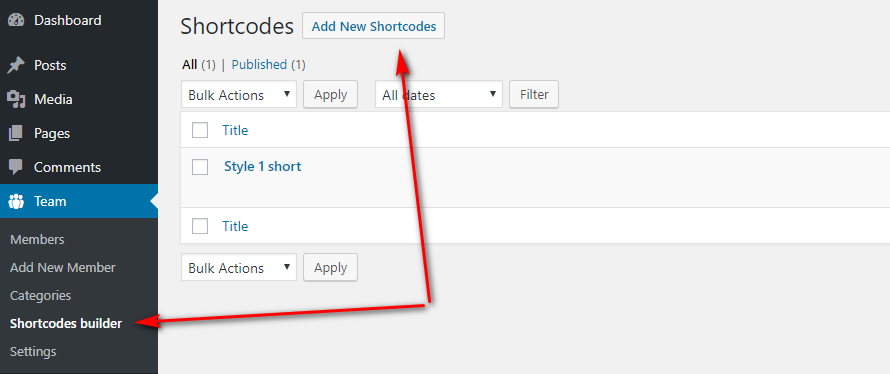2. Config shortcode option as you wan to show > Click Publish button
With Selection Tyle has 4 items(Grid,Table,List, Carousel) please refer Short code document for more detail about each param
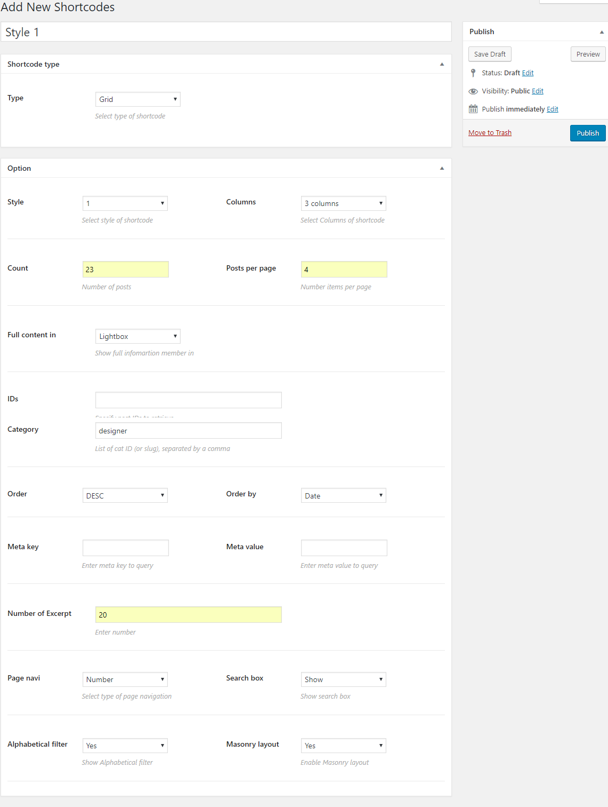3. Copy shortcode and paste it into your post, page, or text widget content
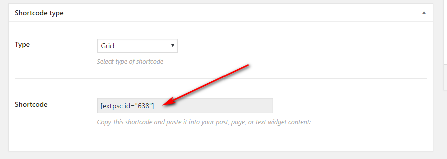General Setting
1. Go to Team > Setting
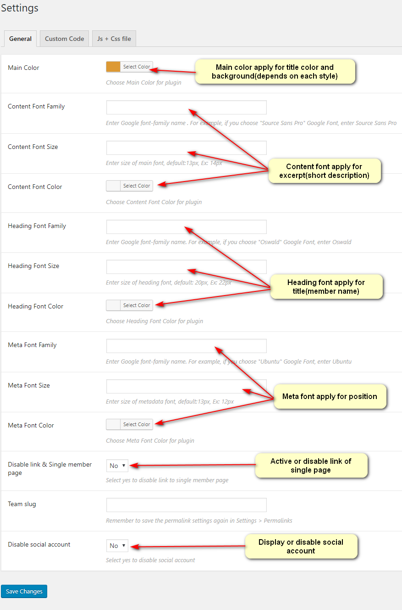2. Display
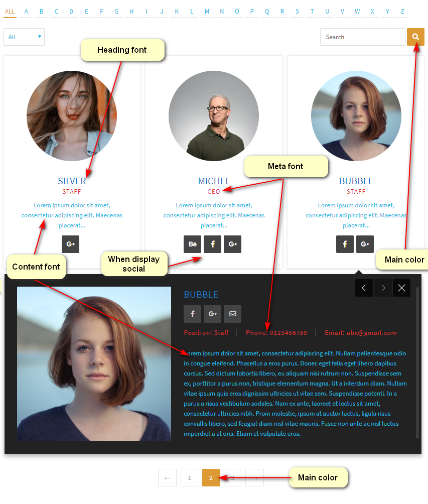When disable social account
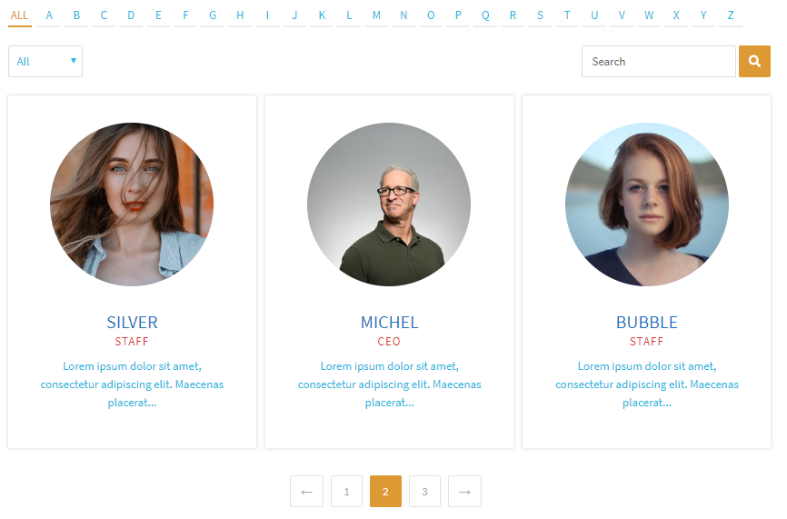Usage
Simple: go to any place which accepts shortcode, for example Post or Page. Input shortcode or you can use visual composer to config.
Classic editor button
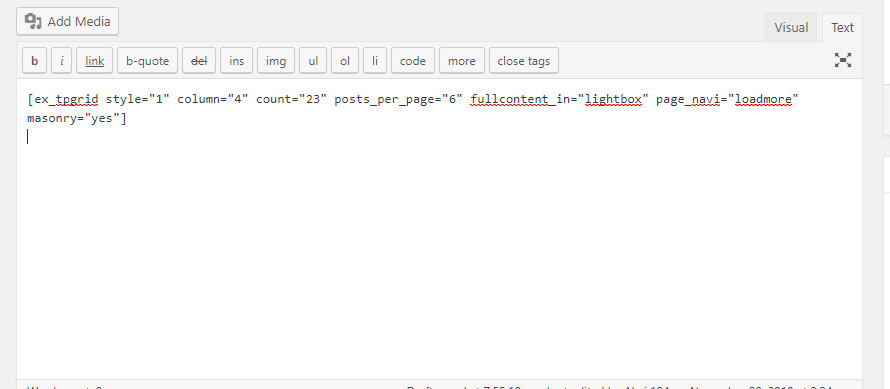You also can use Vissual composer to config
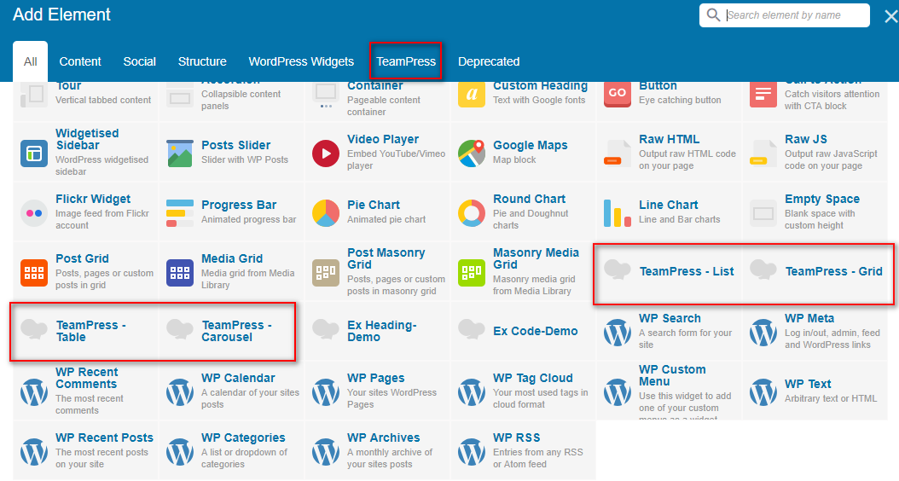Translation
The plugin is translation ready, please follow the steps bellow:
To translate front end, you can go to Timeline Settings page > Front end static text

To translate all static text (front end & back end) you can follow this guide
- 1. Download and install Poedit
- 2. Open POEdit and load "/wp-timeline/language/wp-timeline.po"
- 3. Translate the text and save the file.
- 4. A file named language.mo is created. Rename it with Code Name of your language. For example, wp-timeline-de_DE.mo for German - Deutsche.
All languages codes can be found here:
http://www.gnu.org/software/gettext/manual/gettext.html#Language-Codes
and all countries codes can be found here:
http://www.gnu.org/software/gettext/manual/gettext.html#Country-Codes - 5. (For WordPress 3.x)Open [{wordpress root}/wp_config.php] and find this line define('WPLANG', '');. Change it with your language code, for example define('WPLANG', 'de_DE');
- 5. (For WordPress 4.x) Go to Settings > General and change your site language
Sources and Credits
I've used the following images, icons or other files as listed.
- Free Photos - by Pixabay
- Font Awesome - MIT License
- CMB2 - GPL V2 License
- Nicescroll jQuery Plugin - MIT License
- GLightbox - MIT License
- Slick - MIT License
Once again, thank you so much for purchasing this plugin. As I said at the beginning, I'd be glad to help you if you have any questions relating to this plugin. No guarantees, but I'll do my best to assist. If you have a more general question relating to the plugin on Codecanyon, you might consider visiting the forums and asking your question in the "Item Discussion" section.
ExThemes